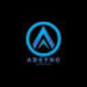
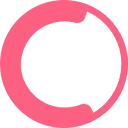
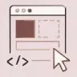

Websim AIРазработка
«Websim AI» представлен в разделе «Разработка». При выборе проверьте нужную операцию и условия работы с результатом.
Конструкторы сайтов и лендингов: Подготовьте содержание и структуру страниц. Сравните редактирование, размещение, домен и экспорт сайта.
Расскажите о выездной услуге, аудитории и подтверждённых условиях заказа. Молекула подготовит основу лендинга с текстом и вёрсткой; перед публикацией проверьте контакты, работу формы и отображение блоков на телефоне в своём проекте.
Сделай черновик лендинга выездного ремонта велосипедов. Нужны описание услуги, порядок обращения, условия и контакты из моего брифа. Не добавляй отзывы, стаж или обещания, которых нет в исходнике.
«Websim AI» представлен в разделе «Разработка». При выборе проверьте нужную операцию и условия работы с результатом.
«Webullar» помогает собрать сайт или веб-приложение. «Webullar» работает с материалами для социальных площадок.

24AI ориентирован на оформление товарных изображений. Фотография продукта становится основой макета, поэтому точность внешнего вида важнее эффектности фона.

«AdSync» помогает собрать сайт или веб-приложение. «AdSync» работает с материалами для социальных площадок.
Для «Aii.CX» сначала определите свою задачу и требуемый результат. Карточка относится к направлению «No-code и Low-code платформы».
Для «Buzzy» сначала определите свою задачу и требуемый результат. Карточка относится к направлению «No-code и Low-code платформы».
Для «Fliplet» сначала определите свою задачу и требуемый результат. Карточка относится к направлению «Разработка».
Сравнивать «FoxyApps (foxyapps.ai)» с другими инструментами раздела «Разработка» удобнее на одинаковом исходном материале.
Looka используют для задачи: создавать основу сайта или приложения. Ещё одно направление работы: получать изображения из словесного задания.
«Mobirise AI Website Generator» помогает собрать сайт или веб-приложение.

В инструменте «StoreBuild.ai» можно готовить материалы о товарах и услугах. Ещё одно направление работы: создавать основу сайта или приложения.
«Unicody» помогает собрать сайт или веб-приложение.
Для «Zarla Website Builder» сначала определите свою задачу и требуемый результат. Карточка относится к направлению «No-code и Low-code платформы».
«AppsMakerStore» представлен в разделе «No-code и Low-code платформы». При выборе проверьте нужную операцию и условия работы с результатом.
Bertha AI помогает подготавливать содержание сайта средствами ИИ. В продукте представлены разговорные модули и поиск изображений. Поддержка разных языков и конструкторов страниц дополняет написание текста, позволяя рассматривать выбранный материал вместе с его языковым оформлением и дальнейшим размещением на ресурсе.
«Chat-fu» помогает организовать разговор с чат-ботом.
«Onelook» представлен в разделе «Разработка». При выборе проверьте нужную операцию и условия работы с результатом.
«Rumi» представлен в разделе «Конструкторы сайтов и лендингов». При выборе проверьте нужную операцию и условия работы с результатом.

10Web соединяет создание сайта на WordPress с его дальнейшим размещением и настройкой. Описание проекта используется для подготовки основы, которую затем нужно наполнить и проверить.
«GenVid» представлен в разделе «Маркетинг». При выборе проверьте нужную операцию и условия работы с результатом.
«GptDuck» помогает готовить изменения программного кода.

Kittl относится к инструментам, которые помогают получать изображения из словесного задания. Ещё одно направление работы: собирать видеосцену по описанию или визуальному исходнику.
Сравнивать «Lander» с другими инструментами раздела «Маркетинг» удобнее на одинаковом исходном материале.
«Napkins» помогает собрать сайт или веб-приложение.
Для «OpenWidget» сначала определите свою задачу и требуемый результат. Карточка относится к направлению «Конструкторы сайтов и лендингов».

Rocket.new используют, чтобы создавать основу сайта или приложения. Ещё одно направление работы: собирать рабочие инструменты и операции с данными.
Для «Seamless Studio» сначала определите свою задачу и требуемый результат. Карточка относится к направлению «Создание контента».
Showspace создаёт персональную страницу портфолио с помощью языковой модели. Пользователь представляет свои проекты и достижения в формате сайта. Продукт также поддерживает просмотр и отслеживание работы, чтобы автор и потенциальный работодатель могли обращаться к подготовленным материалам профессионального представления.
Сравнивать «tldraw» с другими инструментами раздела «Дизайн» удобнее на одинаковом исходном материале.
«Vzy» помогает собрать сайт или веб-приложение.

Claritee используют для задачи: подготавливать визуальные сцены и анимацию. Ещё одно направление работы: создавать основу сайта или приложения.
«GigaCode» помогает готовить изменения программного кода.
Poper AI создаёт всплывающие окна для сайта с применением ИИ. Конструктор позволяет настраивать этот элемент под сбор адресов почты, подписку или продажу. Пользователь подготавливает окно для выбранного коммерческого сценария, связывая содержание и оформление всплывающего сообщения с задачей конкретной страницы.
Для «Thread» сначала определите свою задачу и требуемый результат. Карточка относится к направлению «No-code и Low-code платформы».
Webflow позволяет собирать сайт в визуальной среде и настраивать его структуру. Для готового проекта важны состояние интерфейса, данные и способ публикации.
Сравнивать «Appypie» с другими инструментами раздела «Автоматизация» удобнее на одинаковом исходном материале.
«Dora» работает с графическими задачами дизайна.

Heights Platform используют, чтобы создавать основу сайта или приложения. Ещё одно направление работы: собирать рабочие инструменты и операции с данными.
«Pagic» помогает собрать сайт или веб-приложение.
«Qtandard» связан с рабочими процессами WordPress.
Для «SitePro» сначала определите свою задачу и требуемый результат. Карточка относится к направлению «Чат-боты и ассистенты».
«STUDIO» помогает собрать сайт или веб-приложение.
Сравнивать «Turbosite» с другими инструментами раздела «Конструкторы сайтов и лендингов» удобнее на одинаковом исходном материале.
«AI Website Builder 2.0» помогает собрать сайт или веб-приложение.
Bubble предоставляет среду для создания приложений без самостоятельного написания кода. Для задач ИИ доступны технологии и плагины, которые разрабатывает сообщество. Пользователь собирает приложение в no-code-окружении и подключает нужные возможности через расширения, не формируя весь программный продукт вручную из исходного кода.
«Butternut» помогает с задачами поискового продвижения.

Camille используют для задачи: редактировать уже написанный материал. Ещё одно направление работы: создавать основу сайта или приложения.
Dorik используют, чтобы создавать основу сайта или приложения. Ещё одно направление работы: собирать рабочие инструменты и операции с данными.
Страница 2 из 3